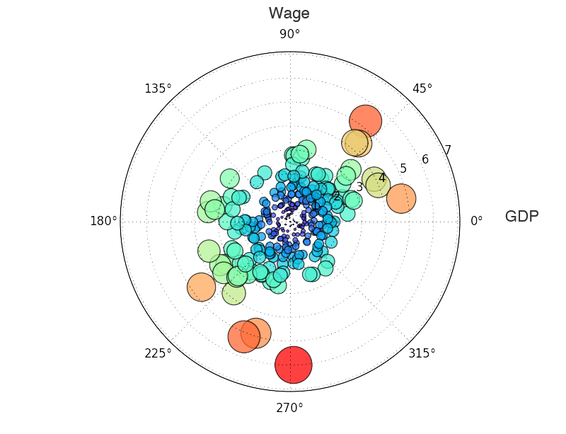

最近又尝试了几种新的可视化方法。一个是试了下Python中的pandas这个包，可以增强Python处理数据的能力，用起来跟R一样方便，顺便试了试Bettencourt在PLOS ONE文章中写的一种处理平均数的办法。简单的说，因为像GDP等变量随人口的变化不是线性的，而是异速增长，有个幂率系数，那么用人均GDP衡量城市可能会出现一个问题就是：大的城市人口多，天生人均GDP也高，如何消除这个影响呢？他们用GDP除以人口的一个幂次，这个幂次是由人口和GDP取双对数回归得出出的系数。用公式来表示就是，因为：
$$GDP = A * Population^\beta$$
那么，我在算人均GDP的时候，为了消除这个规模效应的影响就可以这样算：
$$\epsilon = \log \frac{GDP}{A * Population^\beta}$$
这样可以比不同指标之间消除城市规模效应后的影响。我也简单用Python画了一个中国的情况：

横轴是GDP，纵轴是工资，理论上GDP相对不那么高，工资比较高的城市应该是生活比较幸福的，因为相对购买力比较强，而那些GDP很高但工资很低的城市就比较悲惨。（数据说明：统计范围是二百多个中国城市市辖区，人口数据来自六普，GDP和工资数据来自2011年城市统计年鉴。）
代码如下：
# coding: utf-8
import pandas
import numpy as np
import matplotlib.pyplot as plt
data = pandas.read_table(r"test01.csv",sep=";")
r = np.sqrt(data["StdResiGDP"]**2 + data["StdResiWage"]**2)
theta = np.arctan2(data["StdResiWage"],data["StdResiGDP"])
area = 40 * r**2
colors = r
ax = plt.subplot(111, polar=True)
c = plt.scatter(theta, r, c=colors, s=area, cmap=plt.cm.rainbow)
c.set_alpha(0.75)
plt.show()
另外，最近做文献综述，用illustrator把复杂科学(Complex Science)的研究脉络梳理了下，从上到下大致是：数学、几何领域；生物领域；自组织、网络科学领域，控制论、与社会经济领域；计算机仿真领域。主要基于前人的工作重新绘制了一遍，添加了关于城市研究的一些组织和个人。
我还从头梳理了一下城市实证研究方面自1900年以来重要的思想和模型，到时候一并放上来。